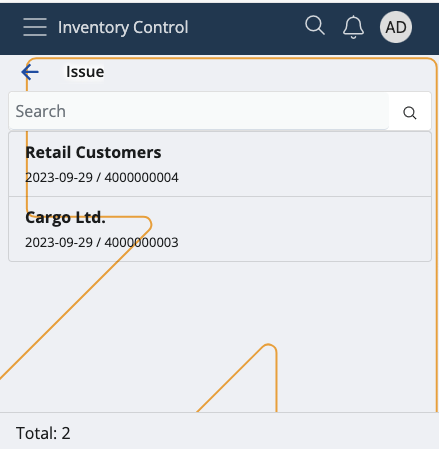
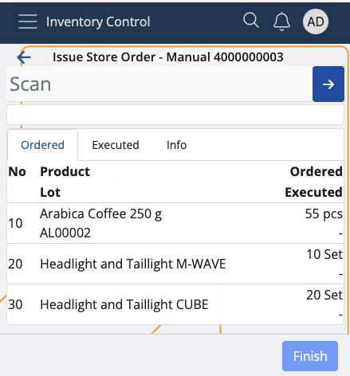

Issue
This section allows you to deduct product quantities from your inventory or shop's store, and create issue store transactions.
Issued quantities which are successfully executed are counted out of your store's overall availability.
Prerequisites
Make sure you've set the correct document type for this operation within the Settings.
You'll then be prompted to select the released order for which you want to issue product quantities.
Available orders are filtered by enterprise company and location.

If you tap on one, you'll be taken to the Issue order.

Overview
Issue is composed of three tabs:
- Ordered
- Executed
- Info
Ordered
This is where all of your ordered product quantities are listed, together with their lots and product lines, if present.
Executed
Here, you can find how many quantities of the products are issued as opposed to being ordered.
For example, out of 30 ordered pcs, only 15 may be issued. This will be reflected in the issue store transaction.

Info
If you tap on a product from the Ordered tab, you'll be shown further information about it here.
This includes revealing its part number and additional codes, if present, as well as ordered/executed quantities.
If more lots are present, the ordered-executed ratio will be distributed based on the FEFO (first expire - first out) principle.

Scanning
In order to mark product quantities of an order as deducted from your store, you need to use the Scan field.
It lets you quickly insert the instances of a product you want to confirm as issued either manually or through barcode commands.
For a list of available barcode templates, check out the Command list.
If you're unfamiliar with the process of scanning a product and require assistance, refer to our overview.
Note
The executed pcs of a product cannot be more than what is ordered.

Zero count
If the Executed bar is left with zero, this will be interpreted as the product having deducted "0 pcs".
In the final issue store transaction, there will be no lines for the product.

Create an issue store transaction
Once you're done scanning the desired product quantities, you can go back to the Executed tab to see if you've made any mistakes.
The Ordered value will be positioned above the Executed one, making it easy to compare these values.

If all ordered product quantities have been issued, the Finish button will be painted in green.
Tap on it once to create your issue store transaction.
This will take you to a separate space with direct link to the document type for this operation.

By tapping on it, you'll access the Inventory module from where you can release and complete the document.
Note
The screenshots taken for this article are from v24 of the Web Client.